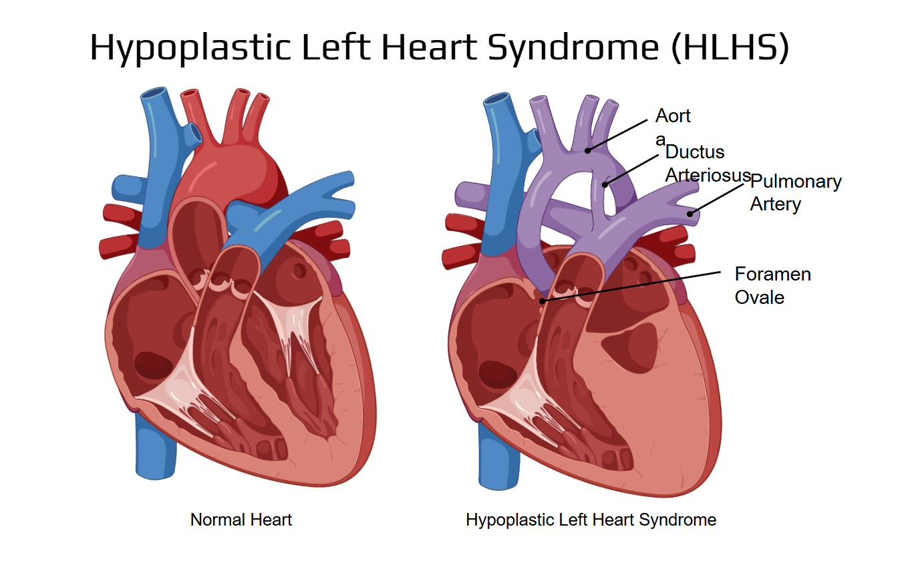
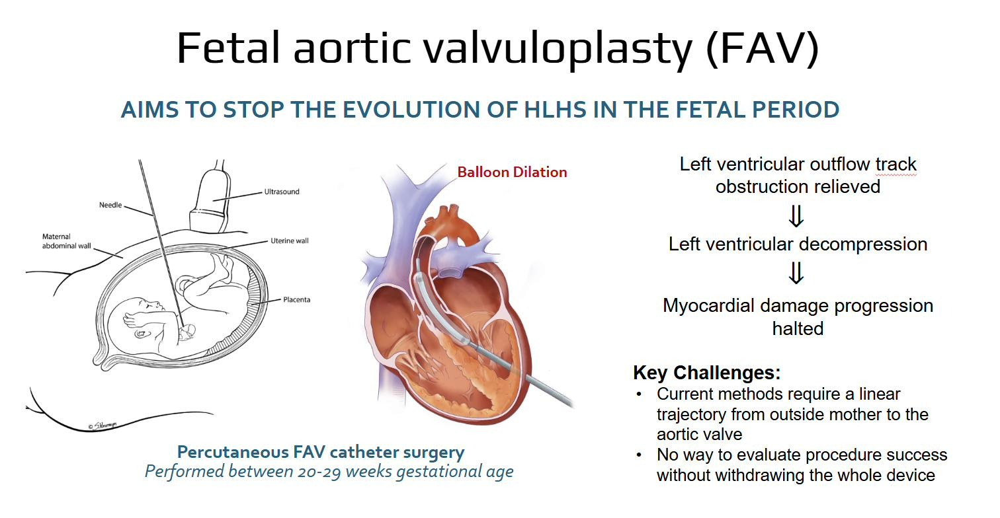
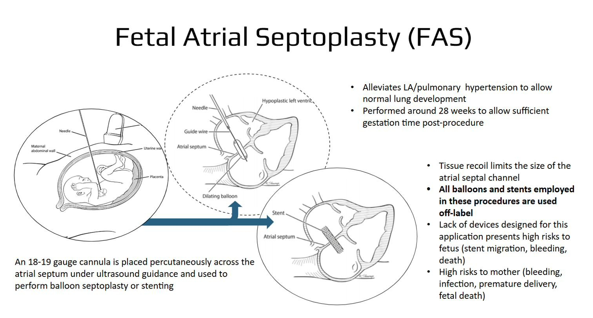

Hypoplastic Left Heart Syndrome (HLHS) is a severe congenital defect in which the left side of the heart, the ventricle, aortic valve, and aorta, is critically underdeveloped. In a normal heart, the left ventricle pumps oxygenated blood to the body; in HLHS, that side can't do the job, so the right side of the heart is forced to support circulation to both the lungs and the body through compensating structures like the ductus arteriosus and foramen ovale.
Fetal intervention, treating the heart before birth, while it's still developing, offers the best chance of changing that trajectory. But testing a new fetal cardiac catheter safely and rigorously requires something that doesn't really exist off the shelf: a realistic, physical stand-in for a developing fetal heart.

Two fetal catheter interventions currently exist to try to alter the course of HLHS before birth, both promising, and both still held back by the same fundamental gap: no purpose-built device or way to validate the procedure works before using it on a real fetus.

A balloon catheter is guided percutaneously to relieve left ventricular outflow tract obstruction, aiming to halt the progression of myocardial damage before it becomes irreversible.
Gaps
An 18–19 gauge cannula is placed across the atrial septum under ultrasound guidance to perform balloon septoplasty or stenting, relieving left atrial and pulmonary hypertension to allow normal lung development.
GapsClosing those gaps starts with being able to test a new device before it ever touches a real patient. The core task is building a fetal test bed capable of the following:
To test a novel, patented catheter designed to treat HLHS in the fetus. The catheter aims to increase the chances of survival for Fetal Aortic Valvuloplasty (FAV) and Fetal Atrial Septoplasty.